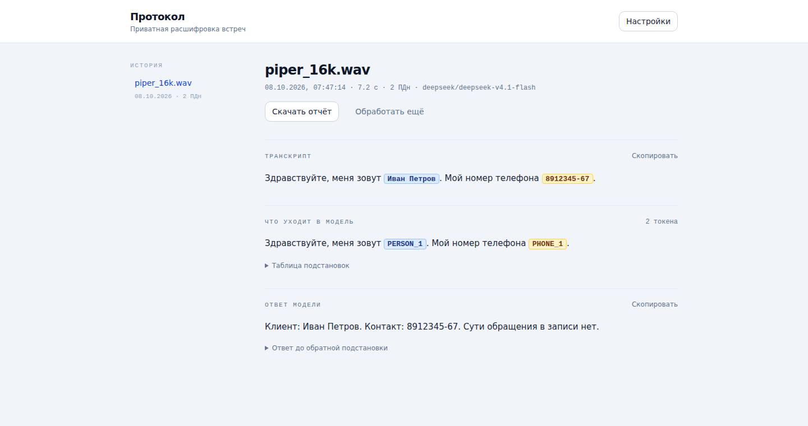
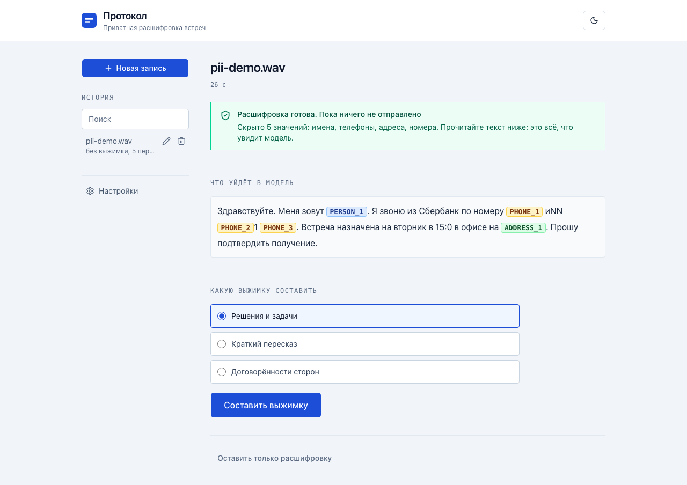
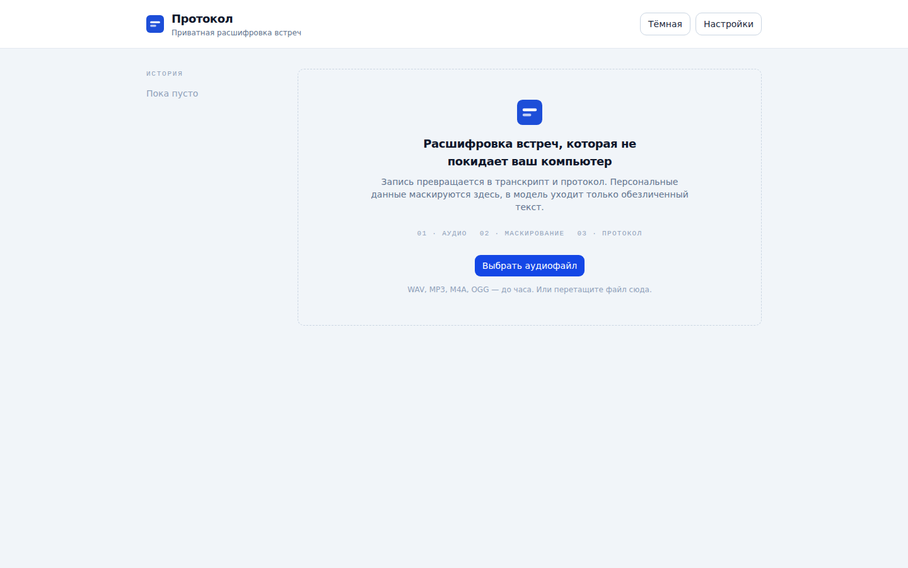
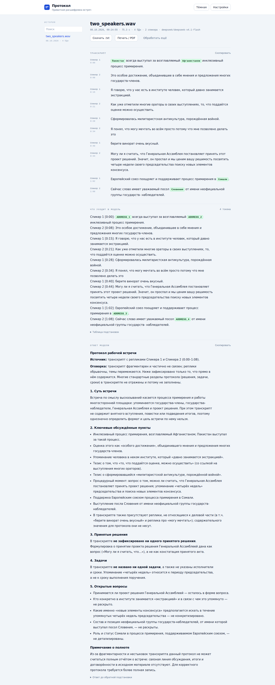
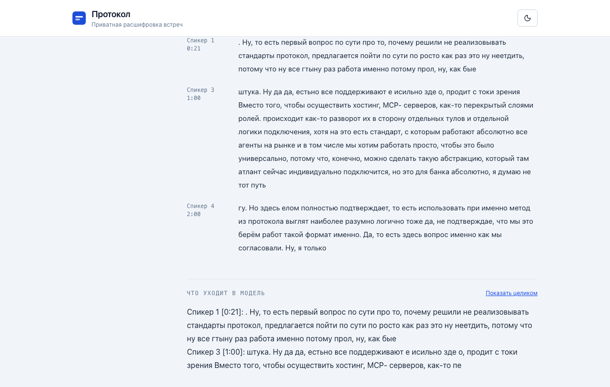
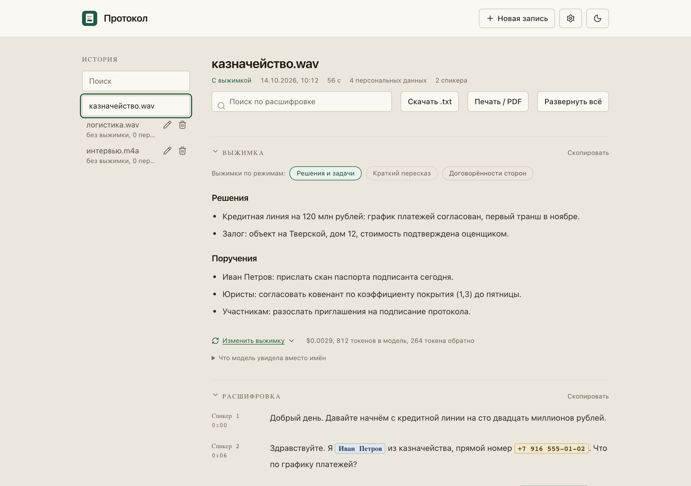
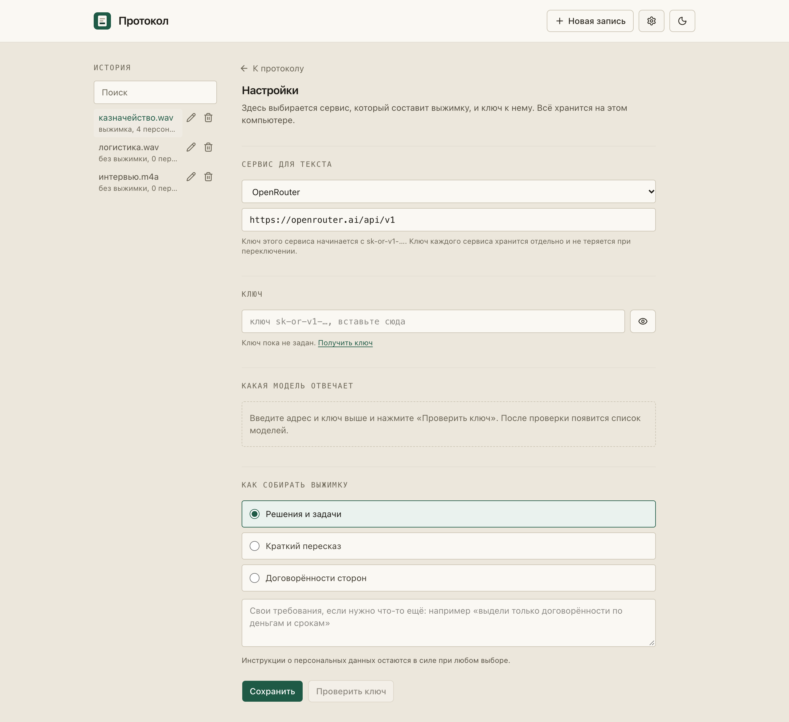
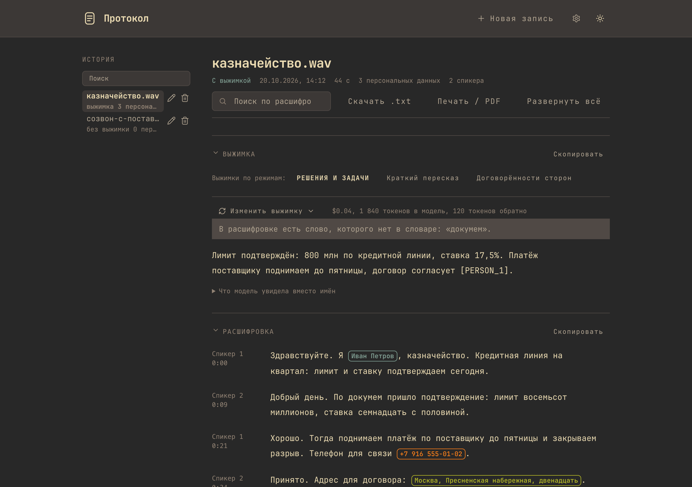

Transcribe a meeting recording on your own machine, mask the personal data, and send only the tokenized text to a language model.
The reply comes back with the names restored locally, and the original recording never leaves the computer. Protokol is a desktop app for macOS and Linux with the models inside the bundle.
MIT licence. macOS 13 or newer on Apple Silicon, and Linux. Fourteen days without a licence file. Build targets

What happens to the recording
Four steps. Three of them never touch the network, and the fourth is the only one that costs money.
-
Decode
on this computer PyAV decodes the file to 16 kHz mono in process. Its wheel carries the FFmpeg libraries, so the app needs no ffmpeg on the machine, and the audio file itself is not kept.
-
Transcribe
on this computer GigaAM v3, an ONNX model in int8, runs on the CPU in chunks of at most 20 seconds, each cut at the quietest frame near the limit. A 75-minute file of 137 MB was recognised in 1 minute 25 seconds.
-
Mask
on this computer A ruBERT model finds the entities that depend on meaning, and a rule layer covers the identifiers whose format can be checked mechanically: the tax id, the card number, the passport, the phone, one-time codes.
-
Summarise
one call to the provider The masked text goes out, the model writes the summary, and the tokens in the reply are replaced by the original values here. The restored text is never sent anywhere.
The pipeline is split in two on purpose. Transcription takes about 30 seconds for a 20-minute recording and costs nothing, because nothing leaves the machine. The summary is one call and it costs money. A second mode costs one call and no transcription.
Speaker turns come from pyannote segmentation and a CAM++ voice embedding, grouped by cosine clustering. Both models are optional: without them the app still transcribes, it just cannot name the turns.
What the model gets, and what it never gets
The whole masked text and a cost estimate are on screen before the request. A transcript with no summary is a legitimate outcome.
In the app
«Здравствуйте. Я Иван Петров из казначейства, прямой номер +7 916 555-01-02.»
In the request to the model
«Здравствуйте. Я [PERSON_1] из казначейства, прямой номер [PHONE_1].»

A person is one token whatever the case. «Ольга Николаевна», «Ольги Николаевны Смирновой» and «Ольге Николаевне» all become [PERSON_1], and the reply is restored with the case the model asks for.
The model reads the text in windows of 512 tokens that overlap by 128, with a confidence threshold of 0.3. The rule layer only fills the gaps the model left, because a rule that argues with the model costs accuracy on the cases the model already gets right.
The app
Screenshots from the current build, taken by npm --prefix web run shots. The meeting in them is invented: the names, the phone number, the passport and the address are made up.






Install
The desktop app carries the models inside the bundle, so nothing is downloaded at run time.
./download_models.sh # the ONNX models, about 0.7 GB, once
./desktop/build.sh # the target follows the platform: mac or linux
./desktop/verify.sh # the bundle, the models and a real inference| Platform | Command | Artefact |
|---|---|---|
| macOS 13 or newer, Apple Silicon | ./desktop/build.sh --mac | .dmg and .zip, arm64 |
| Linux | ./desktop/build.sh --linux | AppImage and .deb |
Nothing is cross-compiled. A macOS bundle is built on a Mac and the Linux targets on Linux, because PyInstaller and onnxruntime produce a binary only for the machine that builds them.
For development on any machine, Docker runs the same sidecar and the same interface:
./download_models.sh
docker compose up --buildThe interface is on http://localhost:3000 and the API on http://localhost:8000/docs.
For the administrator
One JSON file fixes the rules of the machine. It is read at start, so the app needs a restart after a change. A key that is left out is not enforced, and a bad value is reported in the interface and skipped rather than stopping the app.
| Key | What it does | Default |
|---|---|---|
base_url | Fixes the provider address; the interface cannot change it. | not fixed |
lock_settings | Locks every setting in the interface. | false |
retention_days | Deletes recordings older than that, with their transcripts. | not set |
allow_export | false hides the .txt export, the print and the copy buttons. | true |
zdr | true allows only providers with a zero data retention policy. | false |
data_collection | deny or allow, the same switch as LLM_DATA_COLLECTION. | deny |
The file is PROTOKOL_POLICY_FILE, by default /Library/Application Support/Protokol/policy.json. The example is policy.example.json and the guide is ADMIN.md, both in the repository.
Two settings decide what the provider may do with the prompt. LLM_DATA_COLLECTION defaults to deny, which keeps the request away from providers that store prompts or train on them. LLM_ZDR set to 1 allows only endpoints with a zero data retention policy; some models have none, and the request then fails.
The app runs for 14 days from the first launch. After that it needs a signed licence file, installed in Settings. The history, the cache and the settings sit next to each other in ~/Library/Application Support/sttshka-desktop/ with the rights 0600, and the app warns when FileVault is off. The interface language is Russian.